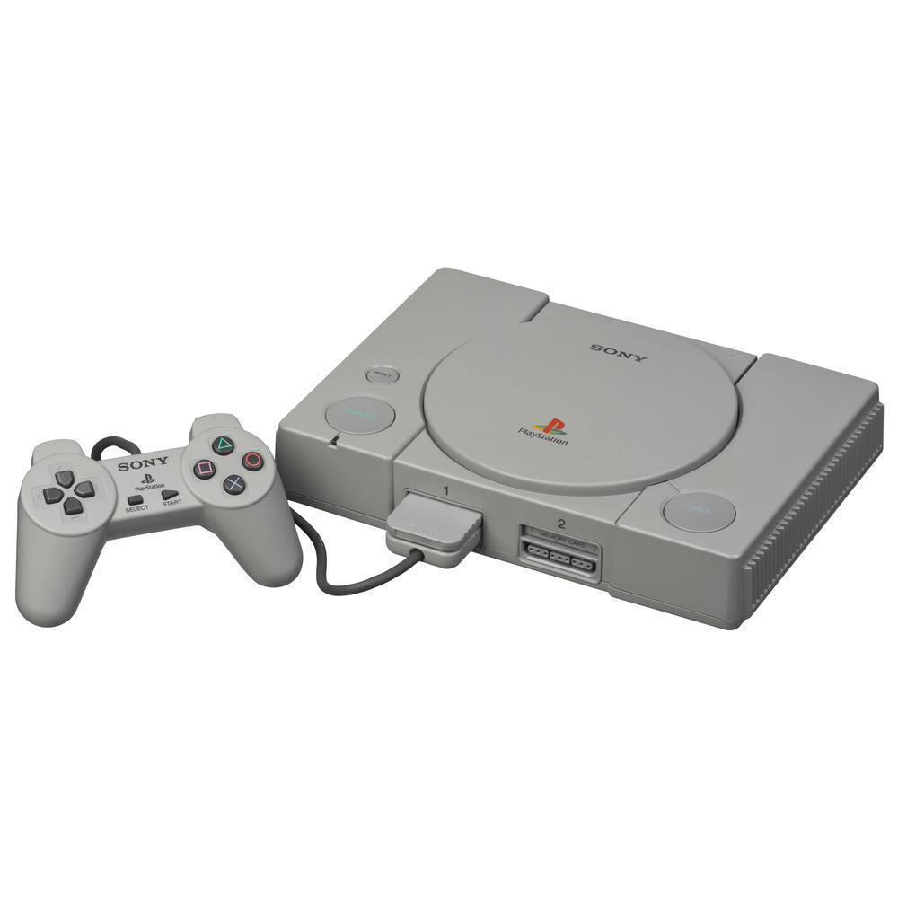
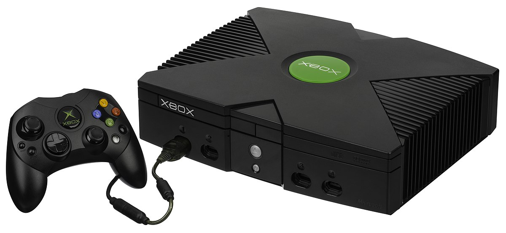
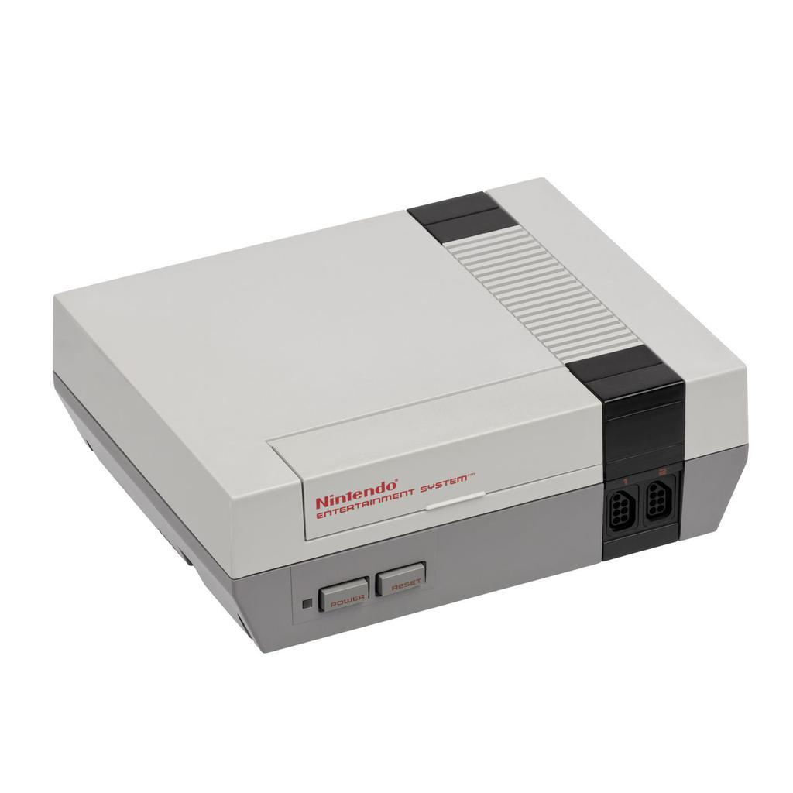

La primera consola de la serie, fue PlayStation, que también fue la primera en vender 100 millones de unidades. Su sucesora, PlayStation 2, es la segunda consola de la serie, y la más vendida de la historia hasta la fecha, alcanzando más de 155 millones de unidades vendidas, llegando a estar en el mercado por 13 años. PlayStation 3, ha vendido más de 87 millones de consolas en todo el mundo,3 después le sigue PlayStation 4 lanzada en 2013 y 2014 con 118 millones de unidades vendidas como la tercera consola en superar dicho formato. Y la más reciente consola de Sony, PlayStation 5, lanzada en noviembre de 2020, ha llegado a las 10,1 millones de unidades.
La primera consola portátil de la marca fue PocketStation, que se lanzó en Japón en 1999, aunque se pretendía lanzar en el resto del mundo, pero debido a sus bajas ventas la consola solo llegó a Japón, y fue descontinuada en 2002 por Sony. Aunque la consola logró llegar a algunas partes fuera de Japón, como Sudamérica y algunos lugares de Europa. Su segunda videoconsola portátil fue PlayStation Portable (PSP) que hasta 2014 logró vender 80 millones de unidades, haciendo que Sony volviera al mercado portátil luego de que no les fue muy bien con PocketStation. Su sucesor fue llamado PlayStation Vita siendo la tercera y última portátil de Sony, que vendió 16 millones de unidades a 2018, pero la consola fue descontinuada en 2019 a nivel mundial debido a sus bajas ventas.
Otro hardware lanzado como parte de la serie de PlayStation incluye la PSX, un grabador de vídeo digital que se integró en la PlayStation y PlayStation 2, aunque duró poco debido a su alto precio y nunca fue lanzado fuera de Japón, así como una Sony Bravia televisión que cuenta con un sistema integrado de PlayStation 2. La serie principal de los controladores utilizados por las series PlayStation es el DualShock, una línea de joysticks de vibración-feedback con gamepad que llegaron a los 28 millones de unidades vendidas al 28 de junio de 2008.
El 19 de septiembre de 2018, Sony Interactive Entertainment anunció el lanzamiento de la consola PlayStation Classic, una versión en miniatura de la primera PlayStation que incluye 20 juegos precargados.9 Es un 45 % más pequeña que la consola original e incluye dos mandos de juego y una ranura para conexiones HDMI. Se pondrá a la venta en cantidades limitadas en Norteamérica, Europa y Japón el 3 de diciembre de 2018.10El 8 de octubre de 2019, vía Twitter, Sony hizo oficial el anuncio de la nueva consola PlayStation 5. Esta llegaría al mercado a partir del 3 de diciembre de 2020.
Xbox es una videoconsola doméstica y la primera entrega de la serie de videoconsolas Xbox fabricada por Microsoft. Salió a la venta como la primera incursión de Microsoft en el mercado de las consolas de videojuegos el 15 de noviembre de 2001 en Norteamérica, seguida de Australia, Europa y Japón en 2002.1 Está clasificada como consola de sexta generación, compitiendo con la PlayStation 2 de Sony y la GameCube de Nintendo. También fue la primera gran consola producida por una empresa estadounidense desde el lanzamiento de la Atari Jaguar en 1993.
 el lanzamiento de la PlayStation 2, que ofrecía la posibilidad de reproducir CD-ROM y DVD además de juegos, Microsoft empezó a preocuparse de que las videoconsolas amenazaran la computadora personal como dispositivo de entretenimiento para las salas de estar. La consola se anunció en febrero del 2000. Mientras que la mayoría de las consolas de juegos hasta ese momento se construían a partir de componentes de hardware personalizados, la Xbox se construyó a partir de componentes estándar de ordenadores personales, utilizando variaciones de Microsoft Windows y DirectX como sistema operativo para soportar los juegos y la reproducción de medios.
La Xbox era técnicamente más potente que sus rivales, ya que contaba con un procesador Intel Pentium III a 733 MHz y un procesador que podía encontrarse en un PC estándar; y fue la primera consola en incorporar un disco duro interno. La consola también se construyó con soporte directo para conectividad de banda ancha a Internet a través de un puerto Ethernet integrado, y con el lanzamiento de Xbox Live, un servicio pago de juegos en línea , un año después del lanzamiento de la consola, Microsoft se hizo un hueco temprano en los juegos en línea y convirtió a la Xbox en un fuerte competidor en la sexta generación de consolas. La popularidad de títulos de gran éxito como Halo 2 de Bungie Studios contribuyó a la popularidad de los juegos de consola en línea, y en particular de los shooters en primera persona.
La Xbox tuvo un lanzamiento récord en Norteamérica, vendiendo 1,5 millones de unidades antes de finales de 2001, ayudada por la popularidad de uno de los títulos de lanzamiento del sistema: Halo: Combat Evolved, que vendió un millón de unidades en abril de 2002. El sistema llegó a vender un total de 24 millones de unidades en todo el mundo, incluyendo 16 millones en Norteamérica; sin embargo, Microsoft fue incapaz de obtener beneficios constantes con la consola, cuyo precio de fabricación era mucho más caro que su precio de venta al público, a pesar de su popularidad, perdiendo más de 4.000 millones de dólares durante su vida comercial. El sistema superó en ventas a la Nintendo GameCube y a la Sega Dreamcast, pero fue superado ampliamente por la PlayStation 2, que había vendido más de 100 millones de unidades cuando se dejó de fabricar en 2013. También tuvo un rendimiento inferior fuera del mercado occidental; en particular, se vendió mal en Japón debido al gran tamaño de la consola y a la sobreabundancia de juegos comercializados para el público estadounidense en lugar de títulos desarrollados en Japón. La producción del sistema se interrumpió en 2009.
Nintendo Entertainment System (también conocida como Nintendo NES o simplemente NES)6 es una videoconsola descontinuada de 8 bits perteneciente a la tercera generación en la industria de los videojuegos, la primera consola de sobremesa de Nintendo en emplear cartuchos. Fue lanzada por Nintendo en Norteamérica, Europa y Australia entre 1985 y 1987. En la mayor parte del continente asiático, incluyendo a Japón (donde se comercializó por primera vez en 1983), China, Vietnam, Singapur, Laos, Camboya y Filipinas se la conoció con el nombre de Family Computer, abreviado comúnmente como Famicom, o simplemente FC).
14 de julio del 2016, Nintendo anunció que la consola sería relanzada como NES Classic Edition el 11 de noviembre de 2016, una versión en miniatura de la consola con 30 juegos instalados en la memoria y con soporte HDMI.9 Está considerada como la videoconsola más exitosa de su época10n. 5 y contribuyó a revitalizar de forma significativa la industria estadounidense de los videojuegos, la cual había sufrido previamente una debacle financiera que ocasionó que varias empresas especializadas quebraran,11 además de establecer el nivel estándar para consolas posteriores en aspectos primordiales como el diseño de cada juegon. 6 y planteamiento de mandos.n. 7 Asimismo, a partir de esta consola Nintendo estableció un modelo de negocios estandarizado en la era contemporánea y referente a la licencia de desarrollo de software a terceros.15 Durante su producción, se desarrollaron numerosos videojuegos que dieron origen a famosas series de videojuegos. Entre ellos se incluyen: Super Mario Bros., The Legend of Zelda, Metroid, Mega Man, Final Fantasy, Metal Gear y Castlevania.
Tras una serie de redituables lanzamientos arcade a principios de los años 1980, Nintendo concibió la producción de una videoconsola a base de cartuchos.16 Bajo este concepto, Masayuki Uemura y su equipo Nintendo R&D se encargaron de diseñar un sistema de juego que fuera menos costoso que sus competidores directos y que además tuviera un desempeño exitoso en el mercado con el fin de que no pudiera ser sobrepasado a nivel comercial por otros sistemas rivales, por lo menos en un período de un año.17 Su lanzamiento se produjo en Japón el 15 de julio de 1983, teniendo un precio de 14 800 JPY y siendo acompañada de tres exitosos «juegos incluidos» de tipo arcade (Donkey Kong, Donkey Kong Jr. y Popeye). Obstante, después de haber logrado buenas ventas en sus primeros meses,18 se evidenció un fallo técnico en la Family Computer (conocida como Famicom) producido por una colocación deficiente del circuito integrado, lo cual causaba que el sistema se «congelara» apenas era ejecutado el software. Después de arreglar la deficiencia con una nueva placa base, lo cual requirió el cese temporal de la distribución de la Famicom en el mercado, su popularidad se disparó, superando a nivel comercial a su competidor directo, Sega SG-1000, y pasando a convertirse en el sistema más vendido en Japón para finales de 1984 —hasta ese entonces, Nintendo había vendido más de dos millones y medio de Famicoms en territorio japonés—.1920